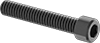
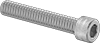
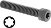
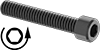
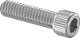
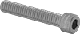
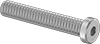
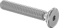

Alloy Steel Socket Head Screws
The standard for high-strength fastening.

Mil. Spec. Alloy Steel Socket Head Screws
Choose these screws for their adherence to strict military standards for material and construction.

Torx Alloy Steel Socket Head Screws
A Torx-Plus drive has more points of contact than a hex drive, allowing you to tighten these screws with less slippage or damage to the recess.

Left-Hand Threaded Alloy Steel Socket Head Screws
Tighten these screws by turning them to the left; once fastened, they prevent counterclockwise-moving parts from loosening.

Cleaned and Bagged 18-8 Stainless Steel Socket Head Screws for High Vacuum
Cleaned and double bagged in an ISO Class 5 (Fed. Std. Class 100) clean room, these screws are ready to use on chambers and components in high-vacuum systems.

Titanium Socket Head Screws
Our most corrosion-resistant metal screws, titanium screws withstand salt water, acids, and chemicals. They have a high strength-to-weight ratio and are about 40% lighter than steel screws.

18-8 Stainless Steel Low-Profile Socket Head Screws
Nearly as strong as steel, these stainless steel screws won’t rust in outdoor, washdown, and other corrosive environments. With half the height of a standard socket head, these low-profile screws fit in tight spaces.
